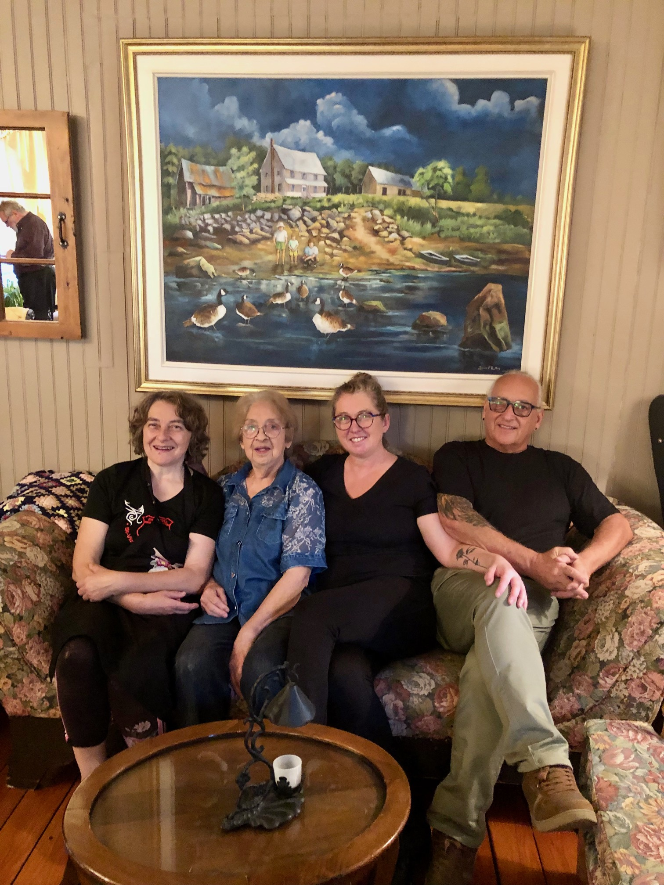

In less than three hours a direct flight from Chicago takes you to Quebec City, a vibrant city filled with history and charm, concerts on the Plains of Abraham where a pivotal battle took place in 1759, and French cuisine as good as to be found many more hours away across the Atlantic. But don’t just stop there, rent a car to travel to my favorite summer spot, Murray Bay. Located in the Charlevoix region, it is just two hours from Quebec City and is known officially as La Malbaie.


Restaurants offer superb local cuisine, flowers abound in gardens galore, parties are nightly, and adventurous opportunities include fishing for trout in hidden lake, ATV trails in mountains dotted with waterfalls, and via ferrata climbing on the bluffs where President Taft’s children used to play in caves.


As summer ebbs, don’t think you have missed it all. Winter activities including dog shedding, skiing and even more via ferrata in the snow can be arranged through the Fairmont Manor Richelieu.


With so many opportunities for residents and visitors, Auberge Romance seems to capture the heart of the community. Louise Bellay, an artist, chef, previous restaurant owner and most enterprising octogenarian opened it just this summer and already made the experience of dining or staying there an art form. With the family creativity of her daughters Patricia and Nadine Bellay and Patricia’s husband Raymond Bouchard, each room in the inn, be it private room or public space, tells a separate story and features furniture and antiques from the area. The name somehow says it all, and love for the region fills the air and the fun of hands-on cooking delights the guests, whether it is the raclette stoves at breakfast or the hot stones featuring salmon, steak or veal which is flambeed at your table and you cook to your preference, accompanied by vegetables of the evening. (One New York fan of Louise admitted that this was the first time she had ever cooked and was ready to try it again). Not to be missed are Patricia’s appetizers and homemade bread and butter and Louise’s blueberry pies, often served to the French Canadian songs played by local musicians on the piano and accordion.


La Malbaie rightfully prides itself in the fresh produce that fills its Saturday farmer’s market, wonderful meats, and very popular bakery Pain D’exclamation, but music and programs abound as well. The Murray Bay Protestant Church is a real community center featuring students from the nearby Domaine Forget, a performance center which offers a wide variety of music and dance Spring through Fall, as well as lectures such as one given by Dominique Rossetti, a former Canadian ambassador now living in town, on one of the world’s finest collections of Jules Verne memorabilia in North America. La Malband, now in its fifth year, always packs the house with original music written by band members Doug Schatz, Ross Brown and their leader Andrew Culver sung by Karen Tucker. Its composition includes musicians from Nashville to Newfoundland.


Just 10 minutes from the center of La Malbaie is Le Quatre Vents created by the much-revered late Frank Cabot considered by many to be the finest garden in North America. Accessible to non-members through lottery for tickets from the end of June until early August, it is a monument to watch.
“More so here in Murray Bay than anywhere else I garden, I find the flowers to be bigger and the colors bolder. It’s just like the light, it’s hard to explain but it’s all just more! The pinks, oranges, yellows and blues of my garden flowers are as vibrant as our famous rainbows that light up the sky over the St. Lawrence many a night at the cocktail hour. In other words: heaven!” Chicagoan Todd Schwebel whose garden at his Murray Bay home welcomed the first visit of the Garden Club of America this summer and last summer from the Garden Conservancy. Schwebel is known as well for pleasing frequent guests with lovely arrangements from his garden in every room as you can see below.

Flowers here create summer memories, here are a few from Todd Schwebel and Michel St. Pierre I share with you.


Michel St. Pierre not only has a lily named in his honor but is renowned for growing flowers not usually able to be grown in this area which you see below.


Next week, Marjorie Schwebel takes us to a whale-watching town once hailed by Jacques Cousteau, only an hour from Murray Bay. Tadoussac, at the maritime junction of the St. Lawrence River and the Saguenay Fjord, which Jacques Cartier first visited in 1535.